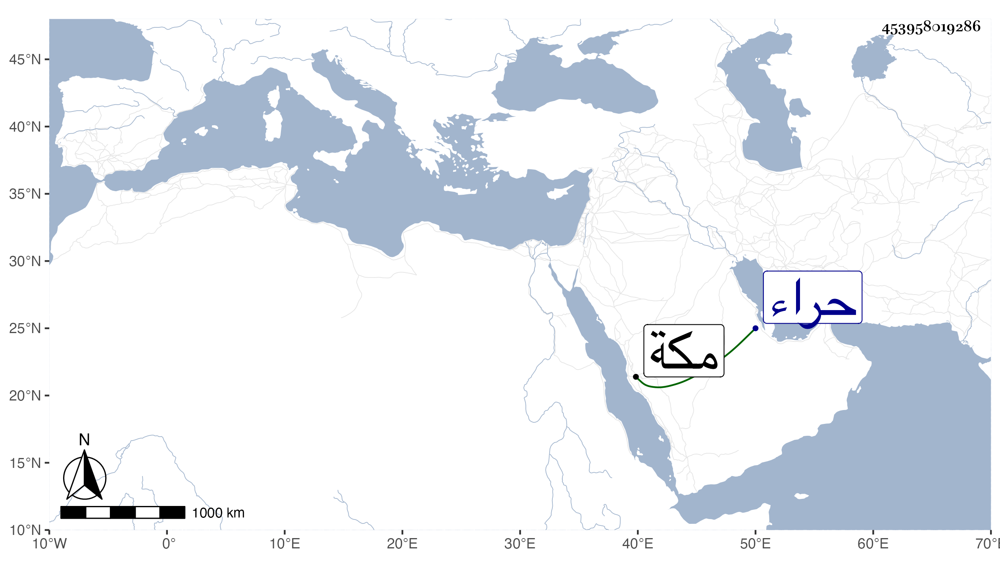

0902Sakhawi.DawLamic.ITO20230111-ara1.EIS1600.453958019286
Biography ID: 453958019286
663
فاطمة ابنة الكمالى محمد بن الناصرى محمد بن محمد بن عثمان بن البارزى أخت زينب وأم الكمال محمد والشهاب أحمد وخديجة بنى الجمالى ناظر الخاص الماضين في محالهم أمها سارة ابنة ناصر الدين بن العطار تزوج فاطمة الجمالى واستمرت تحته حتى مات فتزوجها يشبك الجمالى مملوك زوجها وحجت معه ثم بعد موت ابنها الكمالى وأخته وتجرعها فقدهما وفقد أختها وغيرهم بمدة سنة سبع وتسعين وجاورت التي تليها وعادت وكانت قد أسمعت وهي صغيرة بعناية الجمالى بن السابق على بعض المسمعين أظنه الزين الزركشى وهي كأختها تقرأ وتكتب مع حشمة ورياسة . ومولدها تقريبا سنة ثمان وثلاثين أو قبل ذلك ؛ ولما كانت بمكة في المرة الثانية كانت على خير وبرفى الجملة وتوجهت لزيارة حراء وكان الاكل الكثير والاحتشام الغزير .
